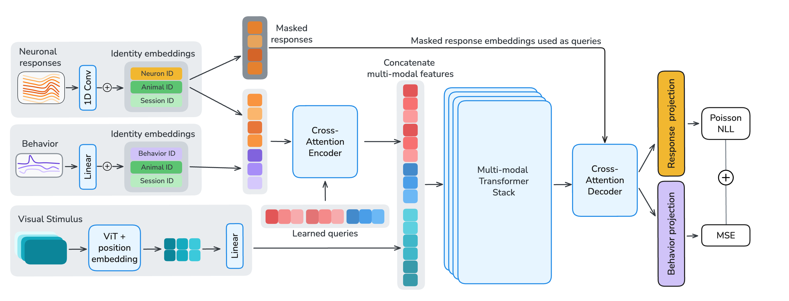
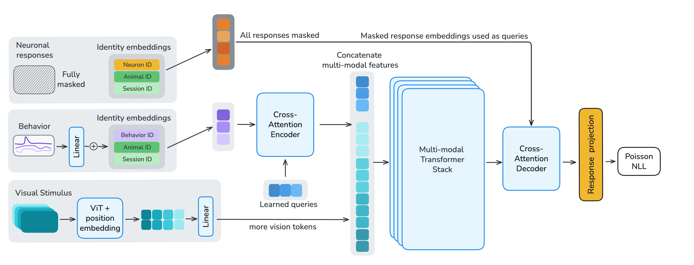
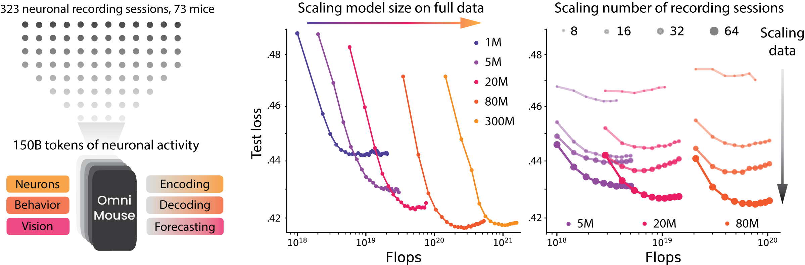
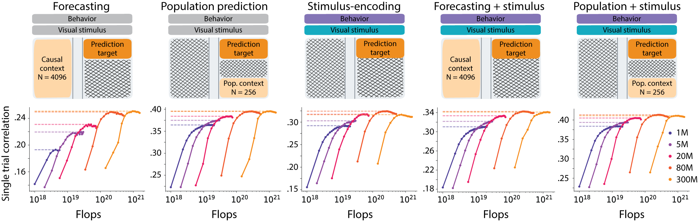
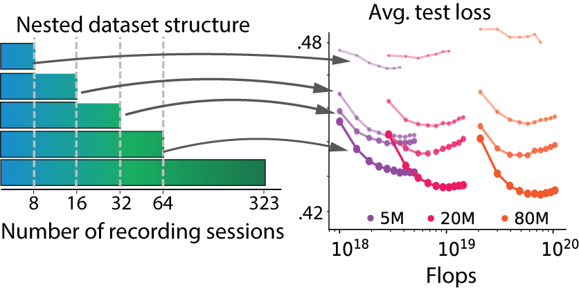
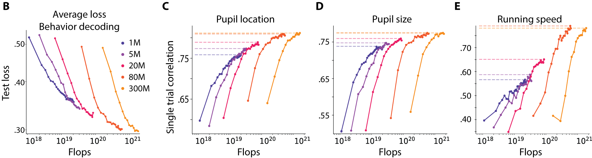

- Overview
- Neural Response Masking
- Behavior Masking
- Visual Stimulus Masking




Scaling data and models has transformed AI. Does the same hold for brain modeling? We train multi-modal, multi-task models on 3.1 million neurons from 73 mice (150B+ neural tokens), flexibly supporting neural prediction, behavioral decoding, and neural forecasting. OmniMouse achieves state-of-the-art performance, outperforming specialized baselines across virtually all regimes. Yet performance scales with more data while gains from larger models saturate – inverting the standard AI scaling story: brain models remain data-limited even with vast recordings.
OmniMouse is trained on one of the largest single-neuron datasets ever assembled: 2,282 imaging planes spanning 78 animals, 328 scanning sessions, and 3.1 million segmented neurons. Use the interactive explorer below to browse the full dataset. Zoom into individual fields of view, filter by animal, session, or cortical depth, and switch between average images, correlation maps, and segmentation masks.
Each tile is one scanning plane from the dataset. Use Image to toggle between average images, correlation maps, and segmentation masks. Use Arrange to cluster tiles by animal, scan, or cortical depth. Zoom in to inspect a single field of view, or fit all 2,282 planes at once.
Scaling data and models has driven the AI revolution. Large language models, vision transformers, and multi-modal systems all follow a simple recipe: more data and more parameters yield better performance. But does the same hold for modeling the brain?
The mouse visual cortex offers a natural testbed. Large-scale neural datasets now exist, standardized benchmarks are in place, and the system is well-characterized. Yet compared to internet-scale corpora, neural data remains small, fragmented, and expensive to collect. Prior models have been restricted to single modalities, single tasks, or single sessions — making it impossible to study scaling systematically.
We set out to change this. OmniMouse is the first model to unify neural prediction, behavioral decoding, and neural forecasting in a single architecture — trained on one of the largest single-neuron datasets ever assembled.

OmniMouse is a multi-modal, multi-task transformer that processes three streams of information simultaneously: single-neuron calcium traces from visual cortex, video stimuli shown to the mouse, and behavioral variables (gaze, pupil size, running speed).
Each neuron's activity is tokenized individually via strided 1D convolutions and augmented with learned identity embeddings for neuron, session, and animal. Video frames are encoded with a Hiera vision transformer. Behavioral traces are projected through a shared linear layer with channel-specific embeddings.
The architecture follows an encode–fuse–decode design. A cross-attention encoder compresses variable-length neural and behavioral tokens into a fixed-length latent sequence. A multi-modal fusion stack integrates these latents with video features via sliding-window and global self-attention layers. A shared cross-attention decoder then reconstructs target neural responses and behavioral traces.
The key design choice is flexible masking. We train with 119 structured masking configurations, enabling the model to handle any combination of forecasting, stimulus-conditioned prediction, sub-population prediction, and behavioral decoding — all within a single model.


We compiled one of the largest single-neuron datasets to date: 3.1 million neurons from the visual cortex of 73 mice across 323 recording sessions, totaling over 150 billion neural tokens. The mice viewed naturalistic movies, ImageNet images, and parametric stimuli (Gabors, random dot kinematograms, pink noise) while running on a wheel. Behavioral variables — pupil position, pupil dilation, and running speed — were recorded simultaneously.
Step one level deeper and watch the model run. On the left, pick a masking configuration — toggle video and behavior as inputs, and choose how many samples of causal context and how many other population neurons the model sees. On the right, scrub through a 9-second clip and compare OmniMouse’s predictions against the measured neural responses (or behavior traces) sample-by-sample.
The schematic on the left reflects the current masking. On the right, the 2 s chunk the model actually sees is drawn in black on top of 4 s of surrounding ground truth (light gray); thin orange/purple lines show the model’s predictions across the whole window, and the bold segment marks the portion the model actually has to reconstruct (1 s for neural responses, 2 s for behavior).
State-of-the-art performance. OmniMouse outperforms all specialized baselines across virtually all evaluation regimes — including neural forecasting, population prediction, stimulus-conditioned encoding, and behavioral decoding. Crucially, these advantages hold even in strict data-matched comparisons where OmniMouse and the baselines are trained on identical sessions, ruling out dataset size as a confound. The architecture itself — unified tokenization, flexible masking, and joint multi-task training — provides a consistent edge, independent of how much data is available.
Model scaling saturates. We trained OmniMouse at five parameter counts — 1M, 5M, 20M, 80M, and 300M — on the full corpus of 323 sessions. Neural prediction performance improved steadily up to roughly 80M parameters and then plateaued: scaling from 80M to 300M produced no measurable gain on forecasting or stimulus-conditioned population prediction, and this held across both data-matched and full-data regimes. The lack of further improvement, despite a near-4× increase in capacity, indicates that brain models at this data scale are not bottlenecked by parameters or compute — the architecture already has sufficient capacity to absorb the signal present in the recordings.

Data scaling works. Scaling the dataset tells the opposite story. We trained models on nested subsets of 8, 16, 32, 64, and 323 sessions, holding architecture and compute otherwise fixed. Across every task and every model size, additional sessions produced monotonic gains, with no sign of saturation at the largest scales we could reach. The gains are disproportionately larger for bigger models: the performance gap between small and large networks widens as the dataset grows — a signature of a system that is data-limited rather than capacity-limited. Extrapolating the observed trends, current recordings still fall well short of the regime where further parameter scaling would pay off.

Behavior decoding scales the most. Among the tasks we studied, behavioral decoding exhibited the cleanest scaling dynamics. Unlike neural prediction, decoding of gaze position, pupil dilation, and running speed improved smoothly along both axes: larger models and larger datasets each yielded consistent gains, together resembling the power-law behavior familiar from language and vision models. Neither axis saturated at the largest scales we tested, suggesting that behavior decoding carries a richer and more structured signal than single-neuron prediction — and that the same architecture, trained on more data with more parameters, would continue to improve well beyond the range we explored.

An inverted scaling story. Taken together, these results invert the standard AI narrative. In language and vision, massive datasets have made parameter scaling the primary driver of progress. In brain modeling — even for the mouse visual cortex, a comparatively simple and well-characterized system — models remain data-limited despite vast recordings. The bottleneck is not compute. It is data.
Results in bold indicate the best score per task in either the data-matched condition (8 sessions, top) or when using the full dataset (323 sessions, bottom).
× Model does not natively support this task
Explore how OmniMouse’s neural prediction changes with the inputs it receives. Toggle whether the model sees the visual stimulus and/or behavior, and use the slider to vary how many other neurons from the same population are provided as context. The highlighted curve and point show the selected configuration; the remaining conditions stay in view for comparison.
Left: the model input masking that defines each condition. Right: correlation between predicted and measured neural responses as a function of population context size, for the four combinations of available model inputs.
OmniMouse demonstrates that a single unified model can match or exceed specialized methods across neural prediction, forecasting, and behavioral decoding. Scaling analysis reveals a clear message: brain models need more data, not bigger architectures. Performance scales reliably with dataset size, but gains from increasing model parameters saturate early.
This finding has practical implications. If brain models are to become foundation models for neuroscience, the field must invest in richer, more diverse experiments — more stimuli, more tasks, more behavioral paradigms. In language modeling, seemingly small improvements from scaling unlocked phase transitions to qualitatively new capabilities. By analogy, richer neural data may similarly unlock new capabilities in brain models, revealing deeper principles of neural computation.
If you find this work useful for your research, please cite our paper:
@inproceedings{
willeke2026omnimouse,
title={OmniMouse: Scaling properties of multi-modal, multi-task Brain Models on 150B Neural Tokens},
author={Konstantin Friedrich Willeke and Polina Turishcheva and Alex Gilbert and Goirik Chakrabarty and Hasan Atakan Bedel and Paul G. Fahey and Yongrong Qiu and Marissa A. Weis and Michaela Vystr{\v{c}}ilov{\'a} and Taliah Muhammad and Lydia Ntanavara and Rachel E Froebe and Kayla Ponder and Zheng Huan Tan and Emin Orhan and Erick Cobos and Sophia Sanborn and Katrin Franke and Fabian H. Sinz and Alexander S. Ecker and Andreas S. Tolias},
booktitle={The Fourteenth International Conference on Learning Representations},
year={2026},
url={https://openreview.net/forum?id=mEw4lhAn0F}
}